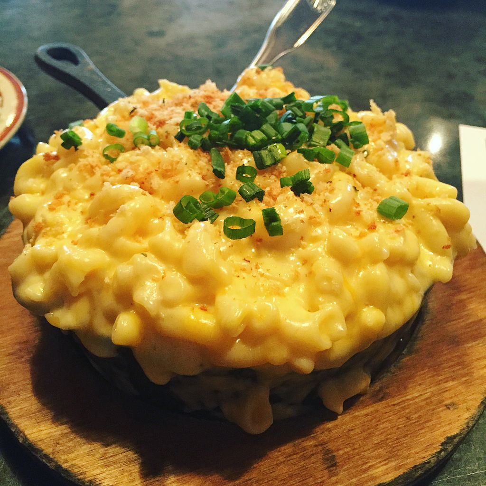

Home
Gluten-Free Macaroni And Cheese

Picture by Texasfoodgawker, license.
Description
This simple gluten-free mac and cheese recipe is creamy and delicious. All the family will love it!
Ingredients
- 10 ounces gluten-free elbow pasta
- ¼ cup butter
- 1 ¼ teaspoons salt
- ¾ teaspoon mustard powder
- 4 cups milk
- ¼ cup cornstarch
- 4 cups shredded Cheddar cheese, divided
Topping
- 2 gluten-free bread slices, toasted and broken into crumbs (Optional)
- 1 teaspoon butter, softened (Optional)
- ½ teaspoon paprika (Optional)
Steps
- Preheat the oven to 375 degrees F (190 degrees C). Grease a 9x13-inch baking dish.
- Bring a large pot of lightly salted water to a boil. Cook elbow macaroni in the boiling water, stirring occasionally until cooked through but firm to the bite, 8 minutes. Drain.
- Melt 1/4 cup butter in a saucepan over medium heat. Stir salt and mustard powder into melted butter; remove from heat and set aside.
- Whisk milk and cornstarch together in a bowl until smooth; stir into butter mixture until well blended. Return saucepan to stove; cook milk mixture, stirring constantly, over medium heat until sauce is thickened, about 5 minutes. Remove saucepan from heat.
- Stir 3 cups Cheddar cheese into sauce until the heat from sauce melts cheese. Add pasta to cheese sauce and stir well; pour into the prepared baking dish.
- Combine remaining 1 cup Cheddar cheese, gluten-free bread crumbs, 1 teaspoon butter, and paprika in a bowl; sprinkle over pasta mixture.
- Bake in the preheated oven until top is crunchy, about 30 minutes.